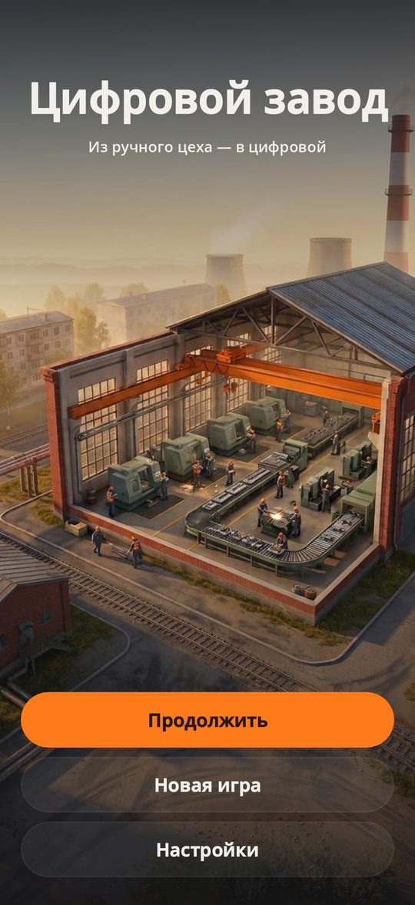
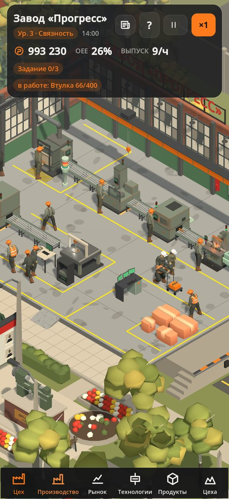
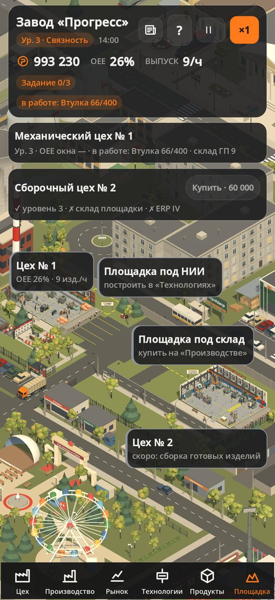
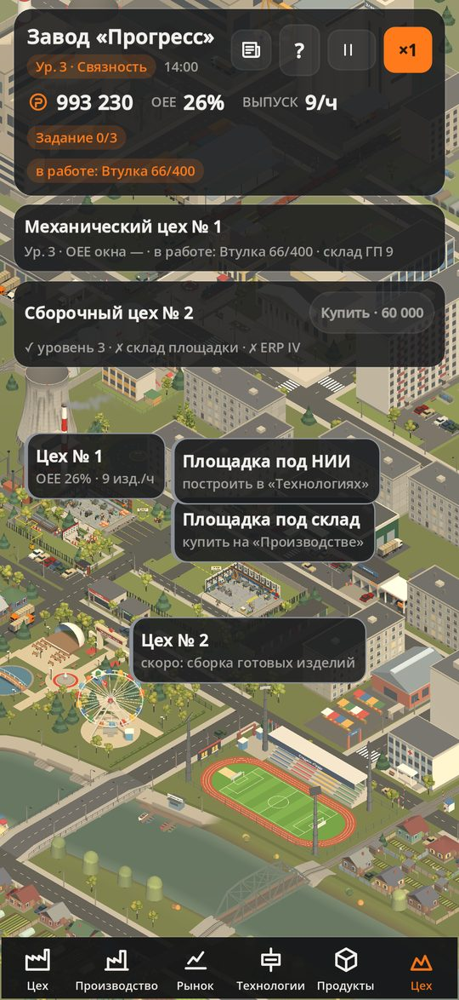
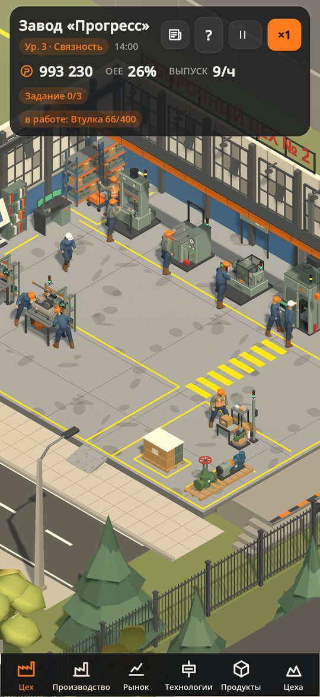
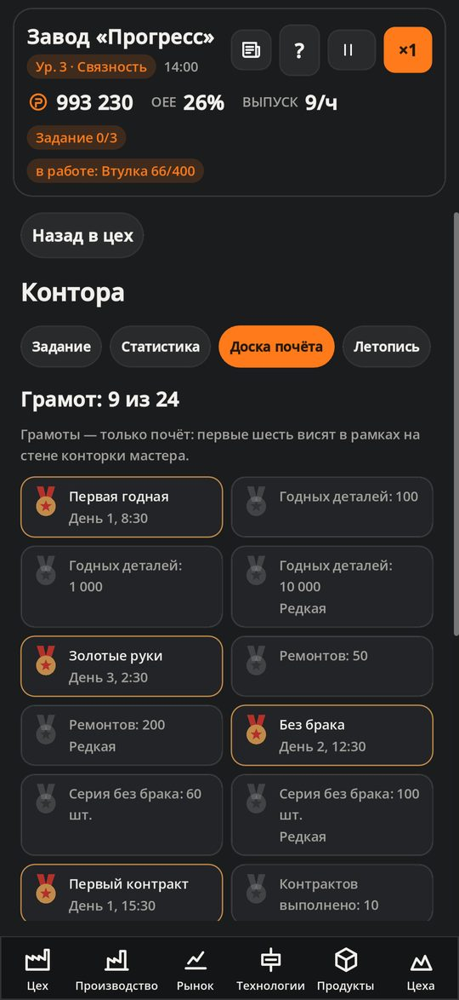

Цифровой завод
Из ручного цеха — в цифровой
Симулятор производства для iPhone: без сети, без рекламы, без покупок внутри.
Скоро в App StoreСсылка появится после выхода игры.
- Офлайнсеть не нужна
- Без рекламыи без покупок внутри
- 3 языкарусский, English, español
- iPhone12 и новее, iOS 17
«Цифровой завод» — симулятор производства для iPhone. Вы принимаете небольшой механический цех, где всё ещё делают вручную: пила, станок с ЧПУ, ремонт по вызову, заказы в журнале. Задача — шаг за шагом превратить его в цифровой завод, где станками, заказами и закупками управляют SCADA, MES и ERP.
Вы ставите заказы в очередь, закупаете заготовки, чините станки, следите за OEE — долей полезного времени линии, берёте контракты и продаёте детали на рынке. Деньги идут на технологии трёх вендоров, склад площадки, собственный НИИ и второй, сборочный цех. По пути вас ждут сменные задания, летопись завода и грамоты на доске почёта в конторе.
Цех здесь живой: рабочие ходят по смене, кран переносит заготовки, к вечеру включается свет. За забором — заводской город с автобусом, машинами и товарным поездом. Игра работает без сети, не показывает рекламу и ничего не продаёт внутри: купили один раз — и играете. Сохранения лежат только на вашем телефоне. Русский, английский, испанский.
Скриншоты





